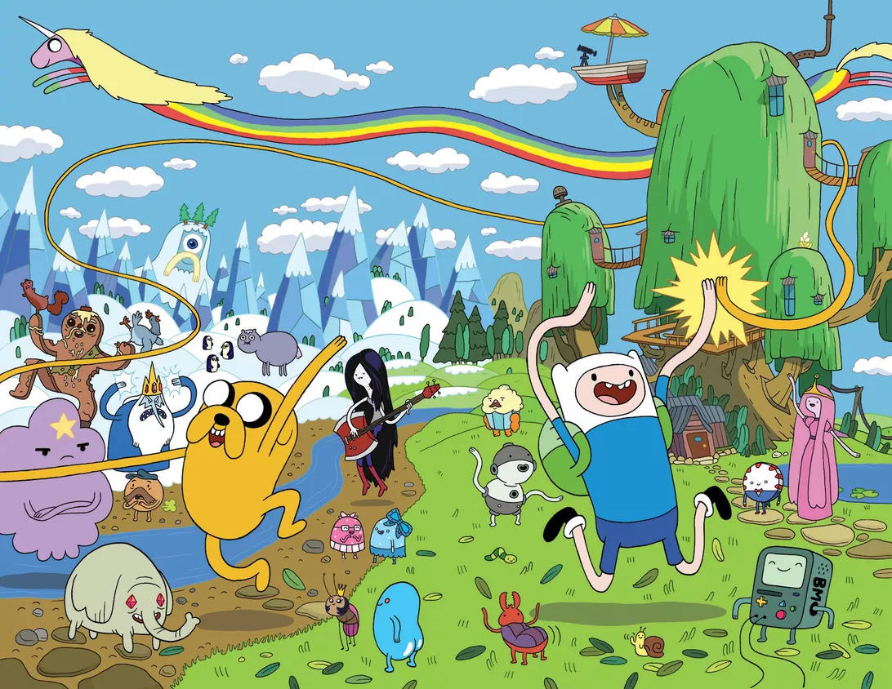

About Finn
Finn is the last known human in the land of Ooo. He is a hero, fighting evil and going into epic adventures with the help of his best friend Jake the Dog
Finn the Human and Jake the dog
Finn's Characteristics
- He's very heroic
- Things don't always go his way
- The world around him is absolutely insane
Finn's Friends
Finn has some crazy friends, they're all over the land of Ooo. His best friend is Jake. Click on the links below to read more about them: